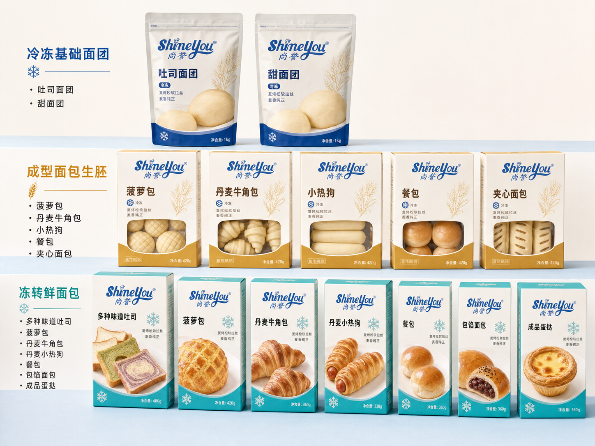
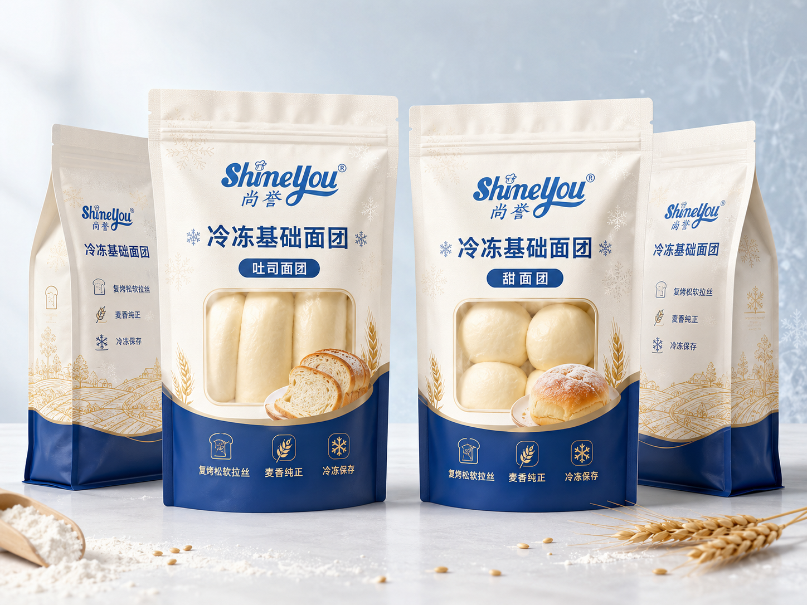
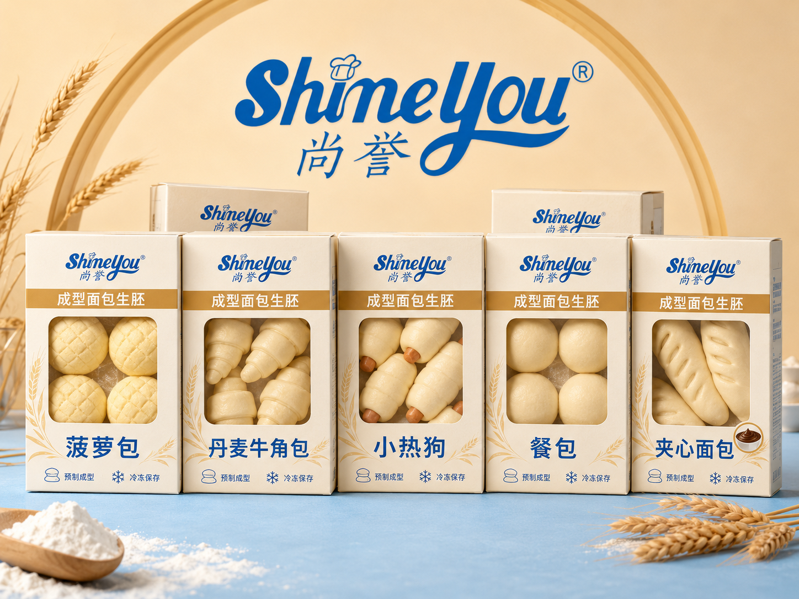

works / shineyou
尚誉 ShineYou · 冻转鲜面包
SHINEYOU 烘焙品牌 · 「冻转鲜」产品线包装系统设计
尚誉 ShineYou「冻转鲜面包」产品线包装设计：从冷冻基础面团、成型面包生胚到冻转鲜成品面包，构建三层产品体系。以品牌蓝与奶白为主色、雪花符号贯穿「冷冻锁鲜」概念，配合「复烤松软拉丝 / 麦香纯正 / 冷冻保存」的统一信息模块，覆盖多种味道吐司、菠萝包、丹麦牛角包、丹麦小热狗、餐包、包馅面包与成品蛋挞等多口味产品线，传达「冻转鲜 · 新鲜烘焙」的货架识别。

全线产品主视觉 / Product Line Key Visual
冻转鲜成品面包系列袋装：多味吐司、菠萝包、丹麦牛角包、丹麦小热狗、餐包、包馅面包与成品蛋挞，蓝白主色配雪花符号建立「冻转鲜 · 新鲜烘焙」的统一货架识别。

三层产品体系 / Product System Overview
包装系统按产品形态分层：冷冻基础面团（吐司面团 / 甜面团）、成型面包生胚（菠萝包 / 丹麦牛角包 / 小热狗 / 餐包 / 夹心面包）与冻转鲜成品面包，以色彩区隔与统一版式形成清晰的产品梯队。

冷冻基础面团 / Frozen Base Dough
深蓝底色承载面团品类，开窗展示面团本体，侧栏「复烤松软拉丝 / 麦香纯正 / 冷冻保存」图标化传达核心卖点与储存方式。

成型面包生胚 / Shaped Frozen Dough
金色条带区分生胚层级，透明开窗直接呈现生胚形态，「预制成型 / 冷冻保存」信息模块统一五款单品，便于门店现烤出炉。